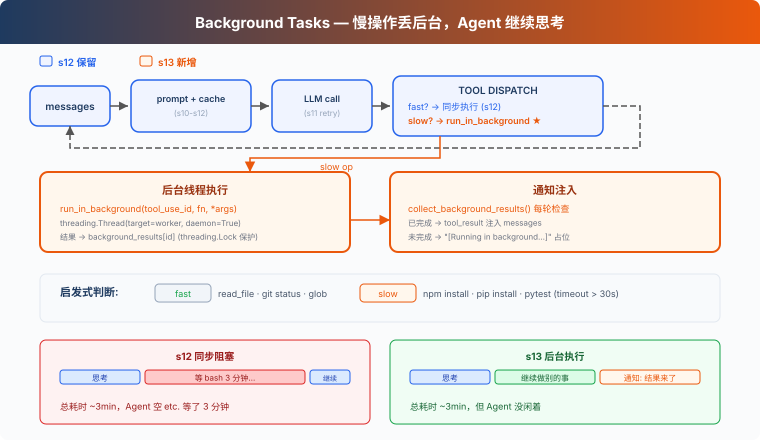

s13: Background Tasks — 慢操作放后台
"慢操作丢后台, agent 继续处理" — 后台线程跑命令, 完成后注入通知。 Harness 层: 后台 — 异步执行, 不阻塞主循环。
On this page
s01 → ... → s11 → s12 → s13 → s14 → s15 → ... → s20
"慢操作丢后台, agent 继续处理" — 后台线程跑命令, 完成后注入通知。
Harness 层: 后台 — 异步执行, 不阻塞主循环。
问题
你用过洗衣机吗？把衣服扔进去，按下启动，然后去干别的——做饭、回消息、看论文。30 分钟后洗衣机"滴滴滴"提醒你：好了。你不会站在洗衣机前面干等 30 分钟。
Agent 的 bash 工具也一样。pip install torch 要 10 分钟，npm run build 要 3 分钟。这些命令一跑，Agent 就在等 bash 工具返回，没法利用这段时间处理别的任务。
读文件是毫秒级，不等。git status 一秒内返回，不等。但 npm install？分钟级。Agent 等 10 分钟什么都不做，而 LLM 按 token 计费，空转就是浪费。
解决方案

教学代码沿用 S12 的简化任务系统和 prompt 组装；为了聚焦后台任务，省略完整错误恢复、记忆和技能系统。唯一的变动：慢操作扔到后台线程，Agent 继续跑循环，后台完成后把通知注入到对话里。
同步 vs 后台：
| 同步 (s12) | 后台 (s13) | |
|---|---|---|
| 慢操作 | Agent 干等 | 后台线程执行 |
| Agent 空闲 | 是 | 否，继续处理 |
| 结果 | 立即返回 | 下轮注入通知 |
| 判断标准 | — | run_in_background 参数（模型显式请求），启发式兜底 |
工作原理
should_run_background: 显式请求优先，启发式兜底
模型通过 bash 工具的 run_in_background 参数显式请求后台执行。如果模型没指定，教学版用关键词启发式兜底：
def is_slow_operation(tool_name: str, tool_input: dict) -> bool:
"""Fallback heuristic: commands likely to take > 30s."""
if tool_name != "bash":
return False
cmd = tool_input.get("command", "").lower()
slow_keywords = ["install", "build", "test", "deploy", "compile",
"docker build", "pip install", "npm install",
"cargo build", "pytest", "make"]
return any(kw in cmd for kw in slow_keywords)
def should_run_background(tool_name: str, tool_input: dict) -> bool:
"""Model explicit request takes priority; fallback to heuristic."""
if tool_input.get("run_in_background"):
return True
return is_slow_operation(tool_name, tool_input)
CC 的 bash 工具 schema 里有 run_in_background: boolean 参数（BashTool.tsx:241）。模型自己决定哪些命令丢后台，不靠关键词猜。教学版保留启发式作为兜底，但主路径是模型显式请求。
start_background_task: 后台执行与生命周期
把工具调用包装成 worker 函数，扔到 daemon 线程里执行。每个后台任务有唯一 ID，状态存在 background_tasks 字典里：
_bg_counter = 0
background_tasks: dict[str, dict] = {} # bg_id → {tool_use_id, command, status}
background_results: dict[str, str] = {} # bg_id → output
background_lock = threading.Lock()
def start_background_task(block) -> str:
"""Run tool in a daemon thread. Returns background task ID."""
global _bg_counter
_bg_counter += 1
bg_id = f"bg_{_bg_counter:04d}"
def worker():
result = execute_tool(block)
with background_lock:
background_tasks[bg_id]["status"] = "completed"
background_results[bg_id] = result
with background_lock:
background_tasks[bg_id] = {
"tool_use_id": block.id,
"command": block.input.get("command", ""),
"status": "running",
}
thread = threading.Thread(target=worker, daemon=True)
thread.start()
return bg_id
返回 bg_id 而不是只返回 [Running in background...]。daemon=True 确保 Agent 进程退出时线程跟着退出。教学版用内存字典追踪状态；真实 CC 有 LocalShellTaskState，输出重定向到文件，支持停止任务、读取后续输出等完整生命周期。
collect_background_results: 通知收集
后台任务完成后，收集结果并格式化为 <task_notification> 通知：
def collect_background_results() -> list[str]:
"""Collect completed results as task_notification messages."""
with background_lock:
ready_ids = [bid for bid, task in background_tasks.items()
if task["status"] == "completed"]
notifications = []
for bg_id in ready_ids:
with background_lock:
task = background_tasks.pop(bg_id)
output = background_results.pop(bg_id, "")
notifications.append(
f"<task_notification>\n"
f" <task_id>{bg_id}</task_id>\n"
f" <status>completed</status>\n"
f" <command>{task['command']}</command>\n"
f" <summary>{output[:200]}</summary>\n"
f"</task_notification>")
return notifications
通知不复用原始 tool_use_id。原始 tool call 已经用占位 tool_result 回复了，后台完成是独立事件，用 task_notification 格式注入。这符合 Messages API 的工具配对语义：一个 tool_use 只对应一个 tool_result。
循环中的集成
agent_loop 里，工具执行分两条路，通知和结果合并为一条 user 消息：
results = []
for block in response.content:
if block.type != "tool_use":
continue
if should_run_background(block.name, block.input):
bg_id = start_background_task(block)
results.append({"type": "tool_result",
"tool_use_id": block.id,
"content": f"[Background task {bg_id} started] "
f"Result will be available when complete."})
else:
output = execute_tool(block)
results.append({"type": "tool_result",
"tool_use_id": block.id, "content": output})
# 通知和工具结果合入同一条 user 消息
user_content = []
bg_notifications = collect_background_results()
if bg_notifications:
for notif in bg_notifications:
user_content.append({"type": "text", "text": notif})
user_content.extend(results)
messages.append({"role": "user", "content": user_content})
慢操作先回一个带 bg_id 的占位 tool_result，LLM 知道这个命令还在跑，可以先做别的事。后台完成后，通知作为独立 text block 和当前轮的 tool_result 一起组成 user 消息。
教学版在 agent loop 继续运行时轮询后台结果。真实 CC 通过通知队列（messageQueueManager.ts）把后台完成事件送入后续 turn，不需要等工具循环。
合起来跑
Turn 1:
LLM → bash "npm install" (run_in_background=true)
→ start_background_task → bg_0001
→ tool_result: "[Background task bg_0001 started]..."
→ LLM: "OK, I'll check later. Let me also read the config."
Turn 2:
LLM → read_file "package.json" (fast, sync)
→ tool_result: file content
→ collect: bg_0001 done! inject <task_notification>
→ LLM sees: config file + install notification in one message
Agent 没干等，npm install 跑后台的时候，它去读了配置文件。
相对 s12 的变更
| 组件 | 之前 (s12) | 之后 (s13) |
|---|---|---|
| 执行模型 | 全部同步 | 慢操作后台线程 + 通知注入 |
| bash schema | command |
command + run_in_background |
| 新函数 | — | should_run_background, is_slow_operation, start_background_task, collect_background_results |
| 新类型 | — | background_tasks: dict, background_results: dict, background_lock: Lock |
| 通知格式 | — | <task_notification>（不复用 tool_use_id） |
| 循环行为 | 工具串行执行 | 慢操作异步，快操作同步，通知每轮收集 |
| 工具 | 8 (s12) | 8（不变，执行策略变了） |
试一下
cd learn-claude-code
python s13_background_tasks/code.py
试试这些 prompt：
Run pip list in the background and find all Python files in this directoryRun npm install (use run_in_background) and while waiting, read package.jsonCreate a task to setup the project, then run pip list in the background
观察重点：慢操作有没有被送到后台？bg_id 是否返回？后台通知有没有以 <task_notification> 格式注入？
接下来
后台任务解决了"慢操作不阻塞"。但如果想定时做某件事呢？比如"每天早上 9 点跑测试"、"每 5 分钟检查一次服务器状态"。
s14 Cron Scheduler → 给 Agent 装一个闹钟。
深入 CC 源码
> 以下基于 CC 源码 `query.ts`（211, 1054-1060, 1411-1482 行）、`services/toolUseSummary/toolUseSummaryGenerator.ts`（L15 prompt 文本）、`LocalShellTask.tsx`（L24-25 常量, L59-98 看门狗逻辑）、`messageQueueManager.ts`（通知队列）、`utils/task/framework.ts`（L267 `enqueueTaskNotification`）的完整分析。 ### 一、pendingToolUseSummary：Haiku 后台生成 CC 在每批工具执行完后，启动一个 Haiku side-query 生成工具使用摘要。发起代码在 `query.ts:1411-1482`，prompt 文本定义在 `services/toolUseSummary/toolUseSummaryGenerator.ts:15`（变量名 `TOOL_USE_SUMMARY_SYSTEM_PROMPT`）。提示是 "Write a short summary label... think git-commit-subject, not sentence"，过去时态，约 30 字符。 Haiku 摘要（~1s）在主模型流式生成（5-30s）期间完成。下一轮开始前，把摘要 yield 出去。SDK 消费这些摘要做移动端进度展示。 ### 二、线程模型：没有真正的线程 CC 运行在 Node.js/Bun 单线程事件循环中。"后台"只是 "不 await"。`ShellCommand.background(taskId)` 把 stdout/stderr 重定向到文件，让进程独立运行。 ### 三、七种后台任务类型 CC 定义了 7 种后台任务（`Task.ts:7-13`）：`local_bash`、`local_agent`、`remote_agent`、`in_process_teammate`、`local_workflow`、`monitor_mcp`、`dream`。每种有自己的注册、生命周期和通知机制。 ### 四、通知注入：命令队列 后台任务完成后通过 `enqueueTaskNotification`（`utils/task/framework.ts:267`）或 `enqueuePendingNotification`（`messageQueueManager.ts`）入队到共享命令队列。通知格式是结构化的 XML：<task_notification>
<status>completed</status>
<summary>Background command "npm test" completed (exit code 0)</summary>
</task_notification>